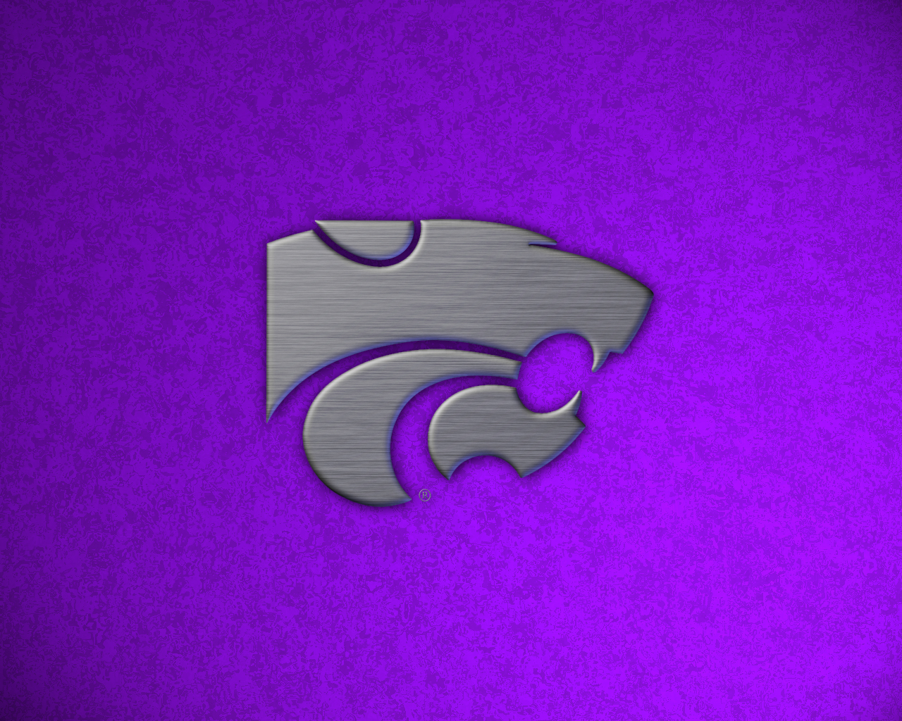

The very first place I worked in sports and learned most of what I know now is at Kansas State University. For about 3 years I was able to
work for the athletics department filming all the different sports they had to offer. This is where I learned to operate replays, camera,
techincal directing and so much more. I wouldn't have the jobs and experience I have now if it wasn't for this incredible school.

Picture of K-State Powercat
Sporting KC
My first professional experience I got from my connections at K-State was to work a Kansas City Sporting Soccer match. It was very nerve racking
as soccer is not my first choice of sport but it was still fun and a good learning experience. I ran the main game camera and tracking the ball
all around the field for the first time was not the easiest thing to do but I hope to do it again someday.
Sporting KC Logo
KSHB 41 / Chiefs Parade
Lately I have been mostly using my talents in News. I currently work at KSHB 41 news. I have been lucky to be a part of a lot of important
broadcasts but the one I will always brag about is getting to direct the Superbowl Parade for the Chiefs after they won. This is my most memorable
accomplishment at the station and possibly in my whole career. I was nominated for an emmy for our work on this show.
Royals
The past couple years I have also been working for the Royals. I have mostly done replays and some camera work for them. Even though the team isn't
doing the best lately, it is still a fun gig to work.
Royals Logo
Chiefs
This year will be my first opportunity to work for the Chiefs. I will be working for ArrowVision doing replay for four games this season. The first
one is coming up very quickly. I will get to work replay for the pre season game against the Green Bay Packers. I am very nervous but hopefully
all of my experience will help me succeed in this new project.